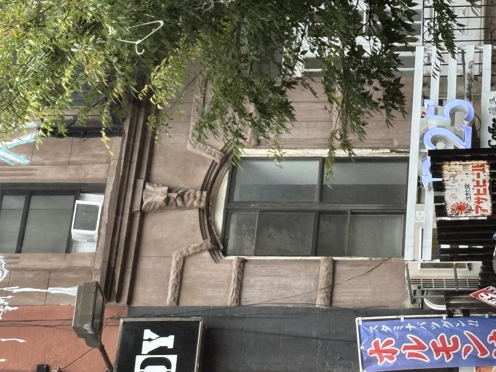
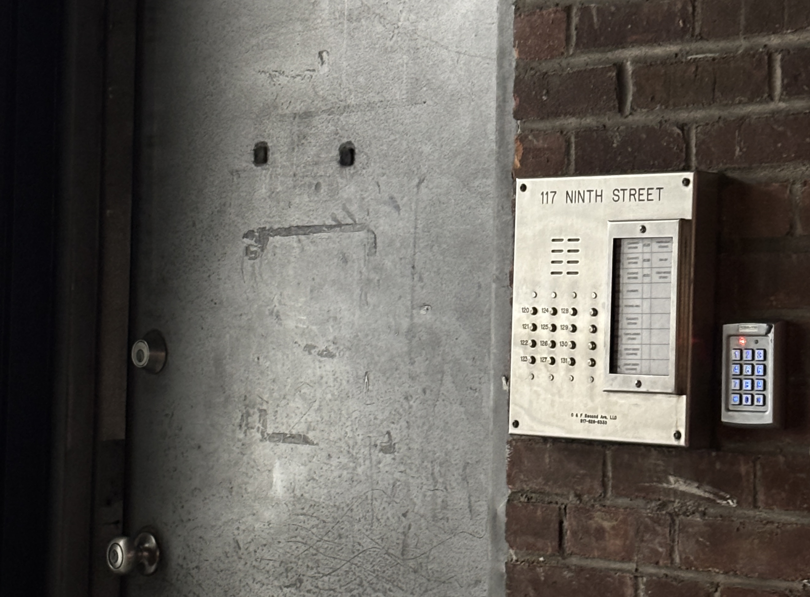

Look at the image to the right. Do you see the face?
No, not the one carved into the stone. Look in the window below it: the top-left pane. In an outline of shadow, sunlight, tree leaves or clouds reflecting off the glass, you can see someone else. A side profile, smiling.
Go ahead. Tap on the glass. Click on the window.
Here is some others.
| Thing | Face |
|---|---|
| A bit of peeled paint: | |
| Some lines on a metal door: |  |